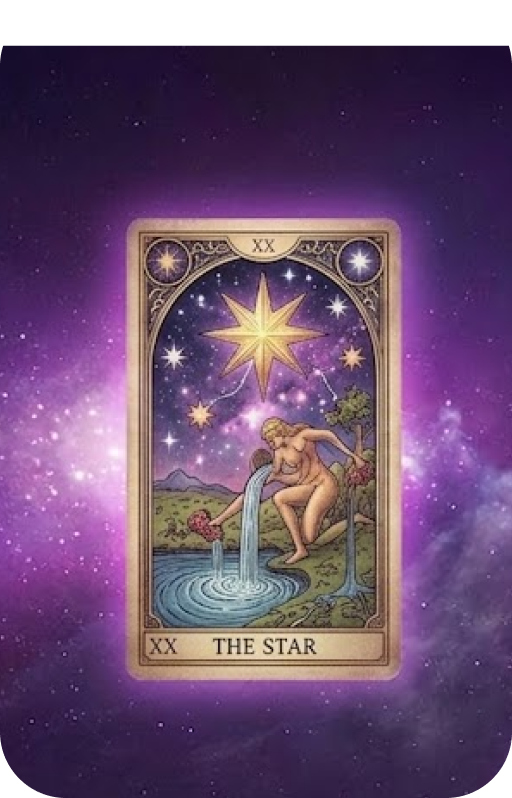

Tarot Reading

ถ้าเลือกดูไพ่ 1 ในให้เลือกคำถามไว้ในใจก่อนที่จะเริ่ม
ใช้ไพ่ทาโรต์เป็นแนวทางสะท้อนเรื่องราวและค้นหามุมมองใหม่ ๆ
- ความรักและความสัมพันธ์
- การเรียนและการงาน
- การเงินและเป้าหมายชีวิต
เจ้าแห่งชะตากรรมผู้หิวกระหายเอ๋ย... จงสดับฟังขั้นตอนการ ปลดผนึกคัมภีร์แห่งโชคชะตา... การอัญเชิญไพ่ การเปิดประตูมิติ การถอดรหัสพันธนาการ การอ่านนิมิตเทพสัจจะ เมื่อม่านหมอกแห่งอนาคตเปิดออก แล้ว...จงเตรียมรับมือกับผลลัพธ์ที่ โชคชะตากำหนดไว้ด้วยตัวของเจ้าเอง!